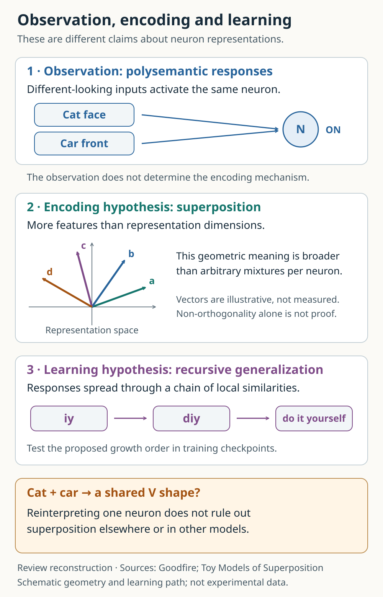
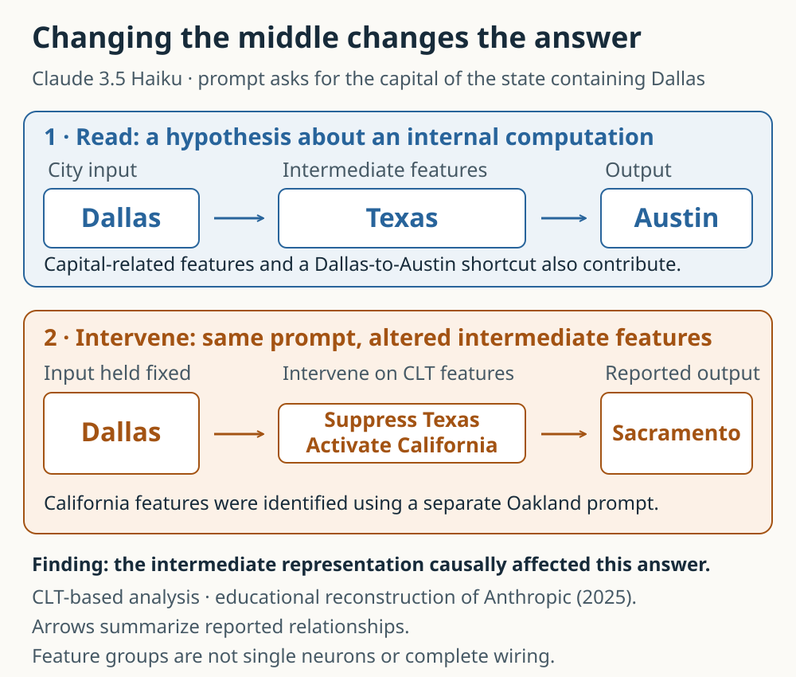
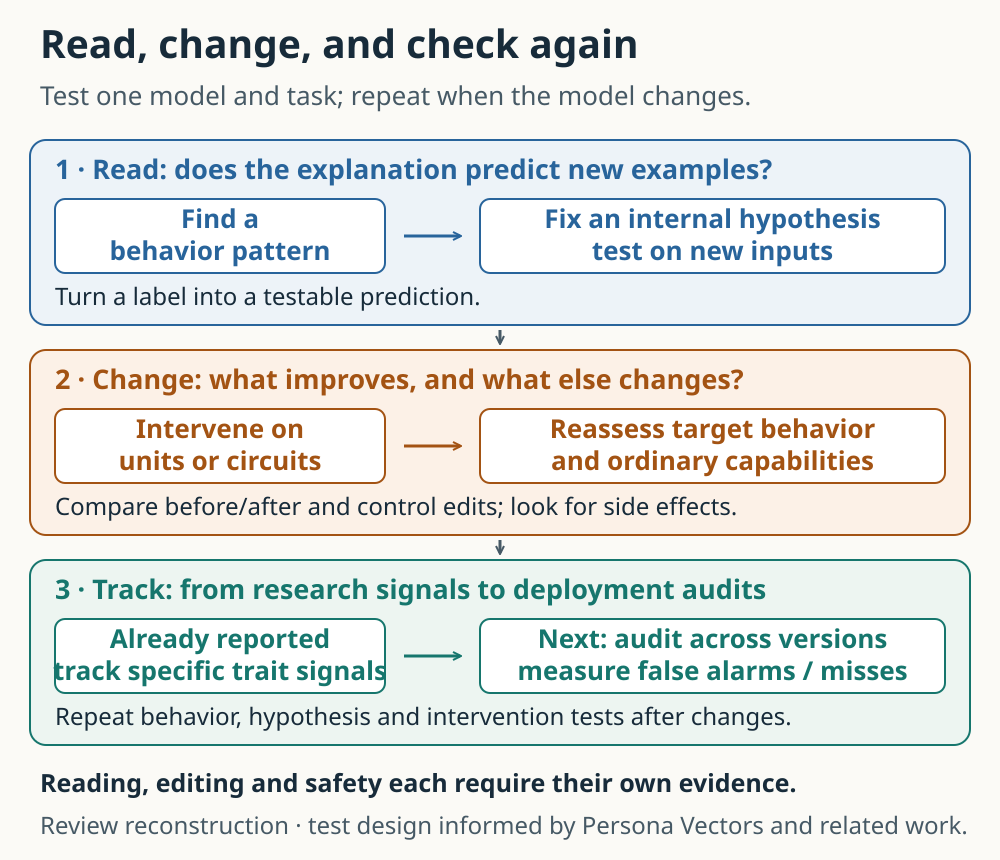

Understanding Neural Networks: Reading Meaning and Testing Causes
Following neurons, features and computational circuits to ask how looking inside AI might change the way we repair models and decide when to trust them.
Contents
- The numbers behind an answer
- What lies between a cat and a car?
- Fitting many features into limited space
- Find a path, then change it
- Can native neurons reveal circuits too?
- Reading the “already clean” claim
- Does an explanation let us repair a model?
- Can an explanation survive an update?
- Does looking inside improve an audit?
- Who makes the explanation, and who can test it?
- How much understanding do we need to move forward?
- References and the status of the sources
- How this review was made
“What is the capital of the state containing Dallas?”
The answer is Austin: Dallas is in Texas, whose capital is Austin. If an AI answers correctly and adds that explanation, it is tempting to assume that its computation followed those two steps. Yet a correct answer and a fluent explanation do not establish what happened inside. The model might associate the city directly with the answer, or several pathways might contribute together.
In 2025, Anthropic researchers traced features involved in this question inside Claude 3.5 Haiku. They kept the Dallas input unchanged, suppressed a group of Texas-related features and increased California-related features. The answer changed to Sacramento, California’s capital. Instead of only listening to the model’s explanation, they tested whether changing a proposed intermediate computation changed the result as predicted. [1, “Multi-step Reasoning”]
This small experiment gives “understanding AI” a concrete meaning. Observe a signal, form a hypothesis about it, intervene, and inspect the answer. It does not explain the whole model. It does provide stronger grounds for an explanation of a particular computation.
More recently, Goodfire researcher Nick Cammarata argued that native neurons may be substantially more legible than researchers had assumed. His essay reopened a debate about the units used to study neural networks. This review follows that debate into a larger question: how can recognizing meaning in neurons lead to testing computations and repairing behavior? What further questions arise when these methods become part of development and safety auditing? An explanation matters when it enables the next experiment. [6, 7]
The numbers behind an answer
A language model divides an input into small pieces called tokens and represents them with collections of numbers. Those representations change through successive layers. Attention helps determine which positions supply information; multilayer perceptrons, or MLPs, transform the representations they receive. Together these operations change the probabilities assigned to the next token.
A neuron here is a numerical computational unit, rather than a literal reproduction of a biological nerve cell. Its activation is the value it produces while processing a particular input. Learned weights are relatively persistent connection settings; activations are the changing computational state elicited by the current text. Learning that changes weights must be distinguished from an experiment that changes activations during inference.
A feature is a pattern the model distinguishes or uses in its computation. It might concern a curve, a place name or a grammatical relationship, but need not correspond to a familiar noun. Its role may depend on context. A feature can align with one native neuron or be represented by a direction involving multiple neurons. [2, 4, 5]
Opening the model therefore does not reveal a document containing its thoughts. Researchers must find recurring relationships among numbers and test the descriptions they assign to them. This is the task of mechanistic interpretability: using observation and experiment to explain how particular outputs arise from internal computations.
Could we simply ask the model why it answered? Its account is useful evidence, but not a complete execution record. A 2025 study inserted answer-influencing hints into multiple-choice questions and examined whether reasoning text acknowledged the influence when the answer changed. Claude 3.7 Sonnet and DeepSeek R1 sometimes used hints without mentioning them. This does not make all reasoning text useless. The model’s account must itself be checked against behavior. [8]
What lies between a cat and a car?
Imagine an image-model neuron responding to both cat faces and car fronts. Viewed through object names, this seems peculiar. Why should animals and vehicles share a unit?
One possibility is that we are looking for the wrong commonality. If the neuron distinguishes a contour shared by the two inputs, rather than animals from vehicles, the response becomes less mysterious. Cammarata reinterprets a famous InceptionV1 example in terms of distinguishing V-shaped and rounded forms. This is the author’s interpretation following examinations of visualizations and connections, not a result independently reproduced by running the model for this review. [6, “Cars and Animals”]
The example illustrates the difficulty of naming. Cats and cars occupy distant categories for us, yet may be neighbors for a computation sensitive to particular edges. Conversely, recognizing one shared shape does not explain every function of the neuron. Try V shapes without cats, cats without the proposed contour, and rotated contours. A successful explanation should predict those responses too.
When a neuron appears to respond to several meanings, the phenomenon is called polysemanticity. The word “appears” matters. Observation alone does not decide whether different functions share a unit or whether a relationship remains undiscovered. Otherwise, we risk treating every difficult neuron as disordered and every plausible common pattern as complete understanding.
Fitting many features into limited space
An influential explanation is superposition: representing more features than the representation has dimensions. This is a claim about neural representations, distinct from quantum-state superposition.
A plane has two mutually perpendicular coordinate directions, but many possible directions can be drawn in it. Assigning several features to different directions is possible. Recovering them when they occur together is the difficulty: overlapping directions cause interference.
If each feature is rarely active, however, interference may be limited much of the time. Toy Models of Superposition studied this tradeoff in small ReLU networks trained on sparse synthetic inputs in 2022. Nonlinear computations can allow more features to share limited space, while failing to distinguish every combination without loss. This is a result in controlled small models, not a proof that all polysemanticity in modern language models has the same cause. [4]
The relevant computational units may consequently fail to align with native neurons. Researchers developed tools for finding alternative units. A sparse autoencoder, or SAE, approximates the original activation vector using a small selection from a larger set of candidate features. Think of choosing a few words from a large dictionary to describe a sentence. The analogy captures a large vocabulary and sparse use; it does not establish that actual features have meanings and boundaries as clear as words.
In 2023, Anthropic decomposed a small Transformer layer containing 512 neurons into more than 4,000 features. This made patterns difficult to recognize in the original coordinates available for study. A larger feature count does not establish that a unique natural inventory has been recovered. An SAE adds training cost and reconstruction error, and its extracted features remain hypotheses to validate. [5]
The diagram separates three questions. At the top is an observation of polysemantic responses. The middle concerns the geometry of storing features. The bottom concerns how responses might develop through related inputs. Cammarata calls the latter recursive generalization. The sequence iy → diy → do it yourself abbreviates his example of responses expanding from a short string to a related abbreviation and its meaning. Finding relationships among final responses is also different from checking their development over training. [6]

Superposition primarily concerns representational geometry; recursive generalization concerns how responses form. They are not mutually exclusive under every definition. Goodfire particularly challenges arbitrary packing of unrelated concepts. Treating that challenge as identical to asking whether more features than dimensions can exist obscures the debate.
Find a path, then change it
Once features have been identified, we need to ask how they compute together. A circuit here means computational units and connections contributing to a particular behavior, rather than physical wires on a chip.
Return to the Dallas example. The researchers used a cross-layer transcoder, or CLT, to approximate MLP computations with more interpretable features. Whereas an SAE decomposes activation patterns, this method builds a replacement model suited to tracing relationships across layers. Relationships discovered in that replacement model are tested with interventions in the original model. [1, 2]
One observed pathway ran from the Dallas input to Texas-related features and onward toward producing Austin. The researchers identified California-related features through a separate question about Oakland. On the original Dallas question, they suppressed the Texas feature group and activated the California group. The Sacramento response supports the hypothesis that an intermediate state representation contributes to the answer. [1]
Read the baseline along the top row of the diagram, then see what changes in the lower row while the city input stays fixed. A predicted output change is stronger evidence than observation alone. Yet the original graph also contains a direct contribution from Dallas toward Austin. The result does not establish that the model computes exclusively in two steps.

The map has gaps. A replacement model introduces approximation error. The method also fixes attention patterns and other quantities, leaving aspects of how the model decides where to attend unexplained. Producing the same answer is distinct from sufficiently preserving the original computation. These are reasons the authors report intervention tests together with methodological limitations. [2, “Mechanistic Faithfulness,” “Limitations”]
Can native neurons reveal circuits too?
What if we study native neurons without separately training a feature-decomposition model? Arora and colleagues addressed this quantitatively in 2026. The point in the computation called a “neuron” proved important. They examined coordinates of the expanded internal MLP activation before the output projection combines them. Signals before combination can expose particular computations more clearly than coordinates after they have been mixed. [3]
For four English subject–verb agreement tasks, they measured the output-score difference (logit difference) between the correct verb and the verb appropriate to a comparison with changed subject number. In effect, they tested preservation of computations distinguishing verbs appropriate for singular and plural subjects. For the Llama 3.1 8B base model, they used an attribution method called RelP to select roughly 200 circuit nodes. Keeping those nodes and replacing the rest with mean activations over reference inputs largely preserved the original verb-preference score difference. Conversely, replacing the selected nodes with mean activations largely removed the effect. The paper evaluates these two aspects with faithfulness and completeness measures. Each task used 300 pairs for selection and a separate 40 pairs for evaluation. [3, Sections 3–5, Figure 2]
A node here is a neuron activation at a particular token position. The same neuron at different positions counts as different nodes. The result does not place all capabilities of an eight-billion-parameter model in 200 neurons. Faithfulness concerns preservation of the task’s output-score difference, not general knowledge, planning or safety.
The study matters because it goes beyond the impression that neurons look readable. It compares which coordinates and tracing methods preserve a specified computation with fewer units. The results justify treating native neurons as serious analytical units, without eliminating every use for SAEs. Units, search methods and evaluation tasks need to be compared together.
Reading large maps by hand remains a bottleneck. A separate multi-hop case study in the same paper, using Llama 3.1 8B Instruct, selected 23 meaningful neurons from 257 high-contributing nodes for a manually explained diagram. Follow-up work, ADAG, seeks to automate grouping attribution graphs and describing their input and output roles. Automation can expand the scope of investigation. Scores measuring correlation between explanations and activations still do not establish preservation of complete behavior or safety. [3, Section 6; 12]
Reading the “already clean” claim
This is useful context for Cammarata’s essay. Revisiting older examples and visualization tools, he argues that more can be learned directly from native neurons and their connections. He challenges the assumption that a network must first be untangled before it can be studied. The source is explicitly an informal research essay and working hypothesis. [6]
The much-discussed roughly 90% figure for Qwen3-32B is a preliminary judgment assigning one main role to neuron poles. It varies with definitions of a role and the treatment of weak activations. It is not a percentage of the model’s computation or safety that has been explained.
The essay also goes beyond observation. Of 200 neurons randomly selected from the public gallery, 183 had positive-side explanations. An agent given only an explanation generated five fresh examples and five near misses per neuron. Defining strong as at least 30% of that neuron’s maximum corpus activation, strong responses occurred for 76% of new examples and 11% of near misses. This is the author’s reported test of whether descriptions distinguish fresh inputs. It measures something different from the accuracy of the 90% judgment or complete functional recovery. [6, “Explanations That Could Lose”]
Leo Gao’s response pushes the criterion further. Coherent activating examples do not establish when or how strongly every input matching a description will activate. He proposes predicting activation values from explanations, substituting those predictions for actual activations, and checking preservation of the model’s output distribution. The demand moves from assigning fitting names to large responses toward predicting quantities needed by the computation. [7]
Weak responses matter to this question too. Small activations need not have small downstream effects: weights can be large, and small contributions can accumulate. Nor should every small response be assumed important. Removal and substitution experiments can test the effects. Gao’s observations about weak activations are not presented in that response as a completed reproducible dataset.
A productive response is to test native neurons, SAE features and circuit connections on matched tasks and budgets, recording where each account fails. Report both how many units receive descriptions and what those descriptions enable us to predict and change.
Does an explanation let us repair a model?
Here interpretability meets development. If a feature contributes to an answer, can changing it adjust the model’s behavior?
In 2024, Anthropic researchers used an SAE to identify a Golden Gate Bridge-related feature in Claude 3 Sonnet. During inference, they fixed its activation at ten times the observed maximum. The model brought the bridge into unrelated answers and sometimes described itself as the bridge. This changed an activation state, not weights. The “Golden Gate Bridge” interpretation became a hypothesis connected to an observable output change. [9, “Influence on Behavior,” “Feature Steering”]
Producing a response through strong amplification is different from precisely repairing a target behavior. Bridge-obsessed answers demonstrate influence while exposing the intervention’s bluntness. Repair requires measuring both reduction of the problem and preservation of ordinary capabilities.
Persona vectors address that connection more directly. Researchers compared mean activations when Qwen2.5-7B-Instruct and Llama-3.1-8B-Instruct expressed a specified behavioral trait and when they did not. They changed activations along the resulting directions and measured scores for traits such as sycophancy and hallucination. Such a vector is neither one native neuron nor one SAE feature: it is an activation direction associated with an investigator-defined response tendency. [10]
The results also reveal difficulty. Reversing a direction after fine-tuning could reduce the problematic tendency while lowering performance on MMLU, a general capability evaluation. A preventive intervention during training better preserved capability under the study’s conditions. After finding somewhere to intervene, when and how much to intervene while preserving other capabilities remains an experimental question. [10, Sections 3, 5]
This suggests a change in development practice. Developers often collect bad outputs and train on additional examples. Internal signals could be measured alongside changed outputs to investigate what a modification actually changed. This is a prospect drawn from the reviewed results, not evidence that current methods can precisely locate and repair every error.
Can an explanation survive an update?
Models learn from new material and encounter changing environments. A signal found today cannot simply be assumed to retain its meaning tomorrow. The persona-vector study examined relationships between activations and response tendencies during conversation, as well as data-driven changes during training. However, high correlations between pre-answer signals and trait scores largely reflected differences between instruction groups; correlations within a group were weaker. That limits extrapolation to subtle changes during natural, extended use. [10, Section 3.3]
The same paper reports a sharper failure case. The researchers tried penalizing activation changes along a trait direction during training. This reduced the projection shift to some extent, yet the problematic tendency remained. They suggest that the model may have represented the tendency through other activation directions. That proposed cause must be distinguished from the observed failure. The result shows why improving an internal indicator and improving behavior need separate tests. [10, Section 5.2, Appendix J.5]
The follow-up questions are nevertheless concrete. Could measuring the same signals after an update reveal changed behavior earlier? Does a signal found in one language remain useful in another? How often does it alarm on ordinary answers, and how often does it miss problematic ones? These are validation questions, not a list of features already available in a finished safety system.
The diagram connects observation, intervention and reassessment. A readable signal on the left does not ensure successful repair in the middle. Successful repair still needs testing on a new version or context on the right. Tracking selected tendencies has already been studied; turning such work into validated, continuous auditing across deployment settings remains a further task.

An understanding claim consequently acquires a version and conditions. “This behavior in this version was explained across these inputs and interventions” is scientifically more useful than an unqualified statement that the model is understood. Recording failures makes subsequent modifications and tests possible.
Does looking inside improve an audit?
An instructive constraint comes from AuditBench in 2026. The researchers implanted hidden behaviors in models and trained them not to confess those behaviors when directly asked. They then compared how effectively auditing tools uncovered the problems. The main suite contains 56 models based on Llama 3.3-70B-Instruct, spanning 14 categories of implanted behavior. [11]
After investigation, the auditor submitted ten hypotheses about the hidden behavior. A separate language-model judge checked whether any captured the implanted behavior. In the latest v4, the default conversational setup achieved an average success rate of 35.5%, compared with 58.0% when an auxiliary model constructed text-completion probes. Each target-model/tool configuration was repeated sixteen times. These are identification rates on a bounded testbed, not a service safety score. [11, Sections 3–4]
Approaches using auxiliary models to construct probes were the most effective overall. White-box interpretability tools helped, primarily on easier targets. The researchers also found a gap between a tool producing useful evidence in isolation and an investigator agent converting that evidence into a successful audit. [11]
This does not negate interpretability. Observation tools and the investigations using them must be evaluated together. An internal clue may be wasted if the investigator forms an incorrect hypothesis or neglects counterexamples. Carefully designed output-only tests can also be powerful. Answer records, reasoning text, internal activations and causal interventions should therefore help cross-check one another’s blind spots.
AuditBench itself concerns behaviors implanted through known procedures. Its results do not give the probability of discovering every unknown problem in a real service. The lesson is to measure how much the full procedure contributes to discovery and repair, rather than ranking tools solely by how deeply they inspect the model.
The evidence can be organized accordingly. The last column below contains proposed follow-up tests, not completed work by this review.
| What the research establishes | Boundary still remaining | A test that could strengthen the conclusion |
|---|---|---|
| Intervening on selected features in a city–state–capital example produced the predicted answer change. | Complete circuits for all inputs or a unique computational path | Re-test predictions on fresh cities and wording, with controls on alternative paths |
| Small native-neuron circuits preserved an output-score difference on limited grammar tasks. | A percentage of the model’s entire capability that is understood | Expand tasks, models and activation ranges while comparing SAEs under matched budgets |
| Features and activation directions supported interventions and tracking of selected tendencies. | Precise repair and general-purpose safety monitoring | Measure target behavior, ordinary capability, false alarms and misses across updates |
| Auditing procedures using different tools could be compared by discovery performance. | Guaranteed detection of all unknown risks | Independent blind audits of new implanted behaviors and real failure cases |
Who makes the explanation, and who can test it?
If interpretability enters development and auditing, access becomes part of the scientific problem. The Golden Gate and Haiku experiments required the developer’s internal access. Native-neuron circuit and persona-vector research used open-weight models and code. Being able to read a result is different from being able to repeat the intervention.
The institutional implications here are this review’s analysis. An external researcher receiving only answers cannot repeat the same activation intervention through that interface. Releasing weights alone is also insufficient. Reproduction depends on inputs used to form the explanation, model and code versions, treatment of failures and computational costs. Statements that a model has been audited will need clearer accounts of who accessed what and which experiments could be repeated.
The objective of a modification is not automatically supplied by the technique. A persona vector starts with an investigator’s definition of a trait such as sycophancy. Who decided the boundary between being considerate and endorsing a user’s mistaken belief? A trait name should not be read as discovery of an entity in a human-like mind. These studies measure response tendencies under specified questions and judging criteria.
The same intervention technique might be used to encourage candor or agreement with a particular position. This is a consequence to consider, not an assertion that a reviewed study demonstrated misuse. As tools for changing behavior improve, disclosure of what changed, whose criteria it serves, and what costs it imposes on capabilities and users becomes increasingly relevant.
How much understanding do we need to move forward?
Useful modifications need not await perfect explanations of every unit. The Dallas experiment shows that a limited explanation can support a predictable intervention. Native-neuron research lets us compare the cost and units of obtaining such accounts. Feature steering and persona vectors extend the problem to repair and tracking. AuditBench asks us to test the investigations that use these tools as well.
A plausible direction is to give experiments and records a larger role in AI development: hypothesize why behavior changed, compare internal signals with external responses, measure benefits and side effects, and re-test the explanation in the next version. This is the direction this review draws from the evidence, rather than an established industry standard or safety guarantee.
Returning to our opening question, the desired knowledge goes beyond a plausible account offered by the AI itself. It should predict computations on new questions, anticipate intervention outcomes, and allow revision when an explanation fails. Accumulating such knowledge could make the grounds for repairing and using models more concrete. Trust would rest on experiments recording both what was explained and where the account broke down.
References and the status of the sources
- Jack Lindsey et al., On the Biology of a Large Language Model, 27 March 2025. Claude 3.5 Haiku feature/circuit and intervention cases; especially Method Overview, Multi-step Reasoning and Limitations.
- Emmanuel Ameisen et al., Circuit Tracing: Revealing Computational Graphs in Language Models, 27 March 2025. Replacement models, intervention validation and methodological limitations.
- Aryaman Arora, Zhengxuan Wu, Jacob Steinhardt and Sarah Schwettmann, Language Model Circuits Are Sparse in the Neuron Basis, v2, 11 June 2026. Listed on arXiv as ICML Spotlight, camera-ready. Pinned official code. Sections 3–6 and code locations/settings were checked; execution was not reproduced.
- Nelson Elhage et al., Toy Models of Superposition, 2022. Small neural networks with sparse synthetic inputs.
- Trenton Bricken et al., Towards Monosemanticity: Decomposing Language Models With Dictionary Learning, 5 October 2023.
- Nick Cammarata, Neural Networks Are Already Clean, Goodfire, 15 October 2026. Informal research essay and working hypothesis; version accessed 23 October 2026. We did not establish that every appendix was present at launch.
- Leo Gao, Neural networks are not already clean, 17 October 2026. A researcher's public response, not a completed independent replication paper.
- Yanda Chen et al., Reasoning Models Don’t Always Say What They Think, submitted 8 May 2025. The official research account appeared on 3 April 2025.
- Adly Templeton et al., Scaling Monosemanticity: Extracting Interpretable Features from Claude 3 Sonnet, 21 May 2024. Golden Gate steering clamps an activation during inference rather than editing weights.
- Runjin Chen, Andy Arditi, Henry Sleight, Owain Evans and Jack Lindsey, Persona Vectors: Monitoring and Controlling Character Traits in Language Models, v3, 5 September 2025. Official code. Trait definitions, judges, models and contexts limit interpretation.
- Abhay Sheshadri et al., AuditBench: Evaluating Alignment Auditing Techniques on Models with Hidden Behaviors, v4, 1 October 2026. Uses the revision correcting a data-construction bug and rerunning experiments; earlier blog/version numbers are not mixed into this account.
- ADAG: Automatically Describing Attribution Graphs, 8 April 2026. Evaluations of automated descriptions are distinguished from whole-behavior or safety guarantees.
- Reporting starting point: Will Douglas Heaven, Korean article on the neural-network interpretability claim, MIT Technology Review Korea, 23 October 2026. We accessed the public introduction and automated summary, not the complete subscription interview. Research claims were checked against the primary sources above.